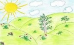
Александр Косарев
ЛАСКОВОЕ ЛЕТО
(сборник)
Москва
2018
Составление: Александр Михайлюк, Людмила Темчина
Рисунки: Владимир Платоненко
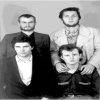
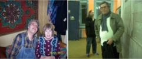
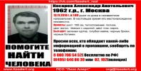
В сборник стихов "Ласковое лето" вошли стихи Александра Косарева разных лет. В сборнике представлены юмористические, лирические, пейзажные стихи и поэма "МИР".
Содержание
Внимание!!!
Пропал человек!!!
Косарев Александр Анатольевич
52 года.
Москва
13.11.2014 в 7:00 вышел из дома в неизвестном направлении и с тех пор его местонахождение неизвестно
Приметы:
Рост: 180 см
Телосложение: полное
Волосы: тёмные с сединой
Глаза: карие
Был одет:
Зелёная куртка
Голубая майка
Чёрные брюки
Чёрные ботинки
Просьба ко всем, кто обладает какой-либо информацией о пропавшем, звонить по телефонам:
8 800 700 54 52 (бесплатно)
8 495 646 86 39
или писать
org@lizaalert.org
ЛЕТО
Всё из солнечного света,
Из ромашек на лугу,
Здравствуй, ласковое лето!
Босиком к тебе бегу.
Ты своей волшебной властью
Окрыляешь и томишь.
Солнца луч - тропинка к счастью,
Наступаешь - и летишь!
Пыль дорог дождём прибита.
Хорошо шагать в тиши.
Небо синее открыто,
И вокруг нет ни души.
Ты закончишься, я знаю:
Только осени не жду.
Чем дорога ближе к краю,
Тем быстрее я иду!
* * *
Что поэзия? Лишь вымысел случайный.
И его могло бы и не быть,
Если бы не голос сердца тайный,
Если б не способность полюбить.
* * *
Замирал Есенин
Пред красой весенней,
Перед рек разливами,
Клёнами да ивами.
И легли в тетради
Золотые пряди
Раннего рассвета
Русского поэта.
* * *
Старой бабушки преданья,
сказки славной старины,
мимолётные созданья
золотой моей весны.
Мне напели эти песни
легкокрылые ветра,
облетающие веси
от заката до утра.
Как тайга зазеленеет
и распустится ольха,
ветер с запада повеет
вместе с криком петуха.
Утро майское наступит,
зацветёт сирени куст,
мир цветением подкупит,
что безжизнен был и пуст.
Солнце брызжет жёлтым светом,
тёплый дух течёт в поля.
И качает майским ветром
голубые тополя.
Просыпается природа
вместе с солнечным лучом.
Здравствуй, лето и свобода!
Это значит - мы живём!
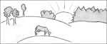
* * *
Эх, кукушечка, гостья лесная,
расскажи мне о том, где жила,
где страна, совершенно иная,
сберегала от клюва орла!
Там другие леса и равнины,
на озёрах - туман поутру,
там живут работяги-мужчины,
что приучены с детства к добру.
Там ни стона, ни плача не слышно,
не хоронят людей пожилых,
и трава разрастается пышно
среди синих цветов полевых.
Магазины наполнены хлебом,
и товары за так отдают.
А под ласковым солнечным небом
люди счастливо, долго живут.
Эх, кукушка, тебе не известна
заповедная эта страна.
Да и мне, говорить если честно,
видно, только приснилась она!
* * *
Подумать только: мир прекрасен,
свобода радует глаза.
И взгляд на будущее ясен,
когда открыты небеса.
Подумать только: в нашей воле
творить хорошие дела,
идти на речку или в поле,
куда дорога завела.
А сколько книг лежит чудесных
и ждёт, чтоб мы открыли их,
чтоб зазвучала в сердце песня,
соединяя нас двоих.
Но почему двоих лишь только?
Люблю я всех людей Земли,
что в космос запускают бойко
к далёким звёздам корабли.
Они на фабриках, заводах
одежду шьют, куют металл;
и вся природа - для народа,
чтоб он нужды ни в чём не знал.
Когда-нибудь всем будет лучше.
Я верю в будущую жизнь,
когда развеет ветер тучи,
когда наступит Коммунизм!
КОРОВА
У коровы много молока,
А бока коровы - карта мира,
И плывут над нею облака,
Словно ломти молодого сыра...
30.10.1999
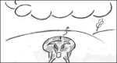
* * *
Я люблю некрасивых девчонок:
Не заносчивы и не горды,
Но полюбят, готовы хоть в омут,
Далеко ли тогда до беды?
Я увидел недавно такую...
Взгляд у взгляда о встрече просил.
И влюбился уже, и ревную,
Но любить не хватает мне сил.
Словно Гадкий Утёнок из сказки,
Белым лебедем выплыла вдруг.
Сколько страсти в глазах, сколько ласки,
Ну а я перед ней, как утюг!
30.01.1999
* * *
Я вижу вновь её глаза.
Они, как уголья во мраке
И как небесная гроза,
К слезам готовы и к атаке.
А вот и молнии из них,
предвестницы грядущей ссоры.
Перед грозою ветер стих.
Перед обвалом смолкли горы.
И вдруг всё сразу на меня
Обрушилось дождём, камнями.
И в шквале вихря и огня -
Я понял: бой идёт меж нами.
Я все слова её стерпел.
Писать об этом неэтично.
От этих ссор я поседел,
Но всё же счастлив в жизни личной.
О чём бы я писал стихи,
Когда бы мир царил меж нами?
Ведь даже мелкие грехи
Большими сделал я стихами!
7.10.2001
* * *
Ко мне приходит Муза Блока,
Садится молча у дверей.
И вижу я: ей одиноко
В унылой комнате моей.
Она глазами ищет друга,
Но не находит ничего.
А на лице - любовь и мука,
И слёзы памяти его.
Слеза прозрачная скатилась
В его цветущий красный гроб,
Слеза любви, как божья милость,
Упала на высокий лоб.
Поэт не встал. Он был далёко,
В своих неведомых мирах.
И только Муза, Муза Блока,
Осталась жить в его стихах.
7.08.2000
* * *
Золотое небо
И сосновый бор.
Рядом поле хлеба,
Вдалеке - собор.
Крест на солнце красный
В высоте горит.
Голос веры страстный
В людях говорит.
Ничего не будет
Кроме этих слов.
Люди не разлюбят
Гордый крест Христов.
Пусть века промчатся,
Возрастёт прогресс.
Будет возвращаться
К вере интерес.
Ведь народ беспечен.
Он к земле прирос.
Свят и человечен
Для людей Христос.
21.01.2003
ОРАТОР
Он куёт и чеканит слова,
Он стоит на трибуне громадой.
Чуть склонённая голова
И тяжёлая чёрточка взгляда.
Отбивает словами как молотом
По натянутым струнам сердец,
Наковальня умов расколота,
И отброшен терновый венец.
Им распахнуты расстояния,
Невозможное стало простым,
Выражая чужие желания,
Говорит языком он живым.
Колыхаются толпы народа,
Как колышется ветром трава.
И желанное слово "свобода"
Заглушает другие слова.
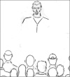
* * *
Зачем вы мне, мечты пустые,
Лохмотья праздничных одежд?
И вы, желанья непростые,
Ростки несбывшихся надежд?
Тяжёлый труд я в ночь подъемлю,
И над тетрадями не сплю.
Всего сильней люблю я Землю,
Сильней Земли тебя люблю.
Мне голос твой в ночи не слышен,
Он с тишиной неразличим,
Так в уголке скребутся мыши,
Но голос твой неповторим.
И в каждом слове скрыта песня.
Она неявно в нём дана.
А в каждой песне всё чудесней
Звенит грядущая весна.
Мы встретимся за тучами
В небесной глубине
И будем наилучшими
В заоблачной стране.
22.11.1999
ДИВАН
Без дивана жизнь не мыслю.
Я лежу на нём и мыслю,
То есть мысль произвожу
Лишь тогда, когда лежу.
Враг далёких расстояний,
Ем и пью лишь на диване
И работаю на нём,
Тлея творческим огнём.
Голос птиц заслышав ранний,
Просыпаюсь на диване,
Но с дивана не схожу,
А лежу, лежу, лежу.
На диване на работу
Еду-еду сквозь дремоту,
Чтобы деньги получить
И второй диван купить.
АЛЛЕЯ
В липовой аллее
Ветер тихо веет,
А листва на ветках
Вот уже желтеет.
Что мы будем делать
Осенью ненастной?
Кто нас приголубит,
Бедных и несчастных?
У тебя нет денег,
У меня - зарплаты.
Видно, счастье в мире
Только для богатых.
5.07.2000
* * *
Как же славно в деревне
встретить лето опять.
Разве мир этот древний
за столетье понять?
Каждый кустик, травинку,
ель, берёзу, сосну
обойду по суглинку,
провожая весну.
Мне откроются дали,
неба синий шатёр.
Разве вы не видали
деревенский простор?
Но прямое лекарство -
это та тишина,
что хранит в себе царство
заповедного сна.
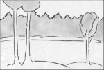
КАТЕР
Есть у Кати катер,
Есть у Кати муж.
Катя в новом платье
Скачет возле луж.
Муж ненастоящий,
Катерок - игрушка,
За верёвку тащит
Катер свой девчушка.
Муж - мальчишка Коля -
Никогда не плачет.
Он решает в школе
На доске задачи.
На другом уроке
Он строгал, пилил,
Кате черноокой
Катер подарил.
Есть у Кати катер,
Есть у Кати Коля,
И учиться Катя
Скоро будет в школе.
* * *
Я её никогда не найду,
Как упавшую с неба звезду,
Как пылинку
В далёких мирах, -
Эту льдинку
На тёплых губах.
Буду лазить в сугробах души,
Только что там найду я в тиши?
Я себя уж давно изучил,
Но её изучить нету сил.
Как упавшую с неба звезду,
Я её никогда не найду!
* * *
Я знаю плен земных страстей,
Небесных - не дал бог.
Среди страданий и смертей
Я выжил, превозмог.
Но жизнь убогая моя
Общением бедна.
И среди песен бытия
Моя всего одна.
И я за славой не гонюсь.
Мне нужен лишь покой,
Чтоб перед смертью только Русь
Погладила рукой.
Чтоб листья клёнов и берёз
Слетели не спеша
В глаза, остывшие от слёз,
Где спит моя душа.
25.01.2003
ЗИНКА
Возвращается память.
Играет пластинка.
Репродукторы в летнем саду.
Я никак не пойму тебя, Зинка.
И акации в желтом цвету.
Что же это? Не бред ли неясный?
Мы находимся в мире другом.
Где ты, Зинка? Где город прекрасный,
Летний вечер в саду городском?
...Повторяется снова пластинка.
Мы по площади летом идём.
Ты напрасно пугаешься, Зинка.
Не снаряды грохочут, а гром
* * *
Атом может быть и адом,
Если он изучен гадом.
8.07.2000
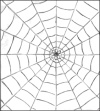
поэма
Сидел я в комнате и думал,
О чём поэму написать,
И начал так писать угрюмо:
"Конца и края не видать!
Здесь синь лесов необозримых,
Там видно пашни и поля.
На среднерусских спит равнинах
Вся Вологодская земля.
"Земля не спит," - сказал мне Голос.
"Ты встань, поэт, и посмотри,
Как ветерок колеблет колос,
Как косят траву косари,
Как мир в движеньи постоянном
Является то тут, то там
В переплетеньи красок странном,
Весь устремлённый к небесам."
"Послушай, Голос, неужели
Весь этот мир не сотворён
За дни божественной недели,
И сам собой явился он?"
"Ты сам себе противоречишь, -
Спокойно Голос возразил, -
На два вопроса не ответишь,
Ведь ты неправильно спросил.
Начну сначала: есть пространство,
И бесконечное оно.
Галактик звёздное убранство
Во взрыве было рождено.
Куски бесформенной природы
Слились в огромную звезду,
Как горные земли породы
Слежались в тяжкую руду.
Когда куски урана в бомбе
Соединяются в одно,
Как атомы в свинцовой пломбе,
Тогда взорваться ей дано.
Так по закону притяженья
Всей массы атомная связь
За доли сотые мгновенья
Сверхплотной став, разорвалась.
Сверхяркий шар образовался,
И тьмы нарушился покой.
Шар этот быстро расширялся
И стал Вселенною большой.
"А что до этого-то было?
Какой Вселенная была
До этого Большого взрыва,
Иль скрыты тайной те дела?"
"Природа хаоса не любит, -
Ответил Голос на вопрос, -
И всё, что было, то и будет:
И раньше было много звёзд;
Не все в одну соединились,
А лишь ближайшие миры,
А те, что дальше, удалились,
Как будто вышли из игры.
Так эти взрывы постоянно
То тут случаются, то там,
Что их не видно, вряд ли странно -
Секунды их равны векам.
Они так далеко отсюда,
Что в телескопы не видны.
И разве меньше скрыто чуда
В образовании волны?"
"А как же разум появился,
Как жизнь возникла на Земле,
Подземных вод родник пробился
И лес возвысился во мгле?"
"Из ста немногих элементов
Земля и звёзды состоят,
Их в теле столько-то процентов.
Был превращений длинный ряд.
Из водорода с кислородом
Образовалася вода.
Был океан под небосводом
И грозы сильные тогда.
И вот в огромном океане
Из неорганики солей
Образовалась жизнь, как в ванне,
Где мылось множество людей.
Вода та плесенью покрылась,
В которой множились грибки.
Из спор их клетка появилась;
Она ускоренно делилась,
Пока не выросли листки.
Сначала микроорганизмик
Из клетки состоял одной,
Он послужил основой жизни,
На берег выскочив земной.
Затем леса образовались
Растений диких и лиан,
Где звери хищные рождались
И предок наш орангутан..."
"Ты "наш" сказал. Но милый Голос,
Ужель ты тоже человек?
Ведь ты невидим, словно волос,
И на тоску меня обрек.
Какое тайное свиданье
Уже за гробом ждёт меня,
Где духов вечное собранье,
Где нет сияющего дня?
Ужели ты меня покинешь?
Скажи: откуда ты, зачем?
Когда во славе ты приидешь,
Когда избавишь от проблем,
На все вопросы дашь ответы,
Рассудишь немощных людей?
Не ты ль вращаешь все планеты
И свет несёшь своих идей?"
В ответ молчание. Я плакал
В холодной комнате пустой,
А на меня смотрел из мрака
Наш мир загадочно простой.
* * *
О, молодость, ты вечно блещешь
На небе утренней звездой,
Пусть под тобою мрак зловещий,
Грозящий скорою бедой.
Пусть под тобою пропасть ада,
Ты улыбаешься всегда,
Ведь впереди твоя награда -
Её коротенькое "Да!".
* * *
Мы с тобою встретились случайно.
Наши встречи были коротки.
Словно неразгаданная тайна,
Наши души были так близки.
Как же мы не встретимся над миром?
Мы в полёте встретимся с тобой,
Чтобы растревоженным эфиром
Прозвучать над жизнью, над судьбой.
4.03.2000
* * *
Всё счастье встречи впереди,
Оно в свидании с тобой.
Лишь только ты не уходи,
Побудь, пожалуйста, со мной.
Я каждый твой весёлый взгляд
С надеждой тайною ловлю.
И даже сам порой не рад,
Что без ума тебя люблю.
30.03.2000
* * *
Мне счастье будущего дня
Всегда рисуется в ненастье.
Когда ты смотришь на меня,
Я ощущаю это счастье.
Идёт ли дождь, идёт ли снег.
Но если ты со мною рядом,
То я - счастливый человек;
Другого счастья мне не надо!
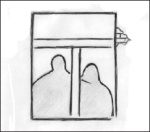
* * *
Да, ты, наверно, идеал
Для будущей эпохи.
И о тебе поэт писал
Волнующие строки.
Чем ты вниманье привлекла?
Какою благодатью?
Он полюбил, и все дела.
Скажи спасибо... платью!
* * *
Попытаюсь я завесу
В храме тайны приподнять:
Я хочу найти принцессу
И по-дружески обнять.
Дружба с женщиной возможна
Предрассудкам вопреки,
Пусть весь мир трактует ложно
Трепет дружеской руки.
* * *
Жаль на сон переводить
Время жизни скоротечной.
Погляди с тоской извечной
На людей, умевших жить.
Все лежат они в могилах
Под оградой и крестом,
Кровь не бегает в их жилах,
Тесен их последний дом.
* * *
Наверстать упущенное время
Невозможно, сколько ни трудись.
Навалилось тяжкой жизни бремя,
И узнал я, что такое жизнь.
Это труд бессонными ночами,
Это тьма, в которой нет огня.
Только звёзды светлыми глазами
С небосвода смотрят на меня.
10.07.2000
* * *
Я знаю, что такое счастье.
Когда в осенний серый день
Вдруг оживает сила страсти,
Цветет сирень.
Когда навек дана свобода
И книги рядом, под рукой,
Когда осенняя природа
Приносит радость и покой.
* * *
Никому не нужен
Человек без денег.
Сколько обобьёт он
По домам ступенек.
Сколько раз заплачет
Он от неудачи!
Человек без денег
Ничего не значит.
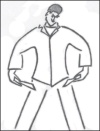
* * *
Ты поверь, что к тебе всё вернётся.
Будет молодость, жизнь и любовь.
Всё уснёт и сейчас же проснётся,
Чтобы звёзды сияли нам вновь.
Смерть проходит. Она как мгновенье.
Вот прошла, и её уже нет.
И опять твоей жизни рожденье,
Снова в окна стучится рассвет.
24.11.2002
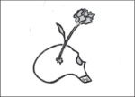
Последнее изменение страницы 31 Jan 2020
ПОДЕЛИТЬСЯ:
{kind=link}
{kind=link}
{kind=link}